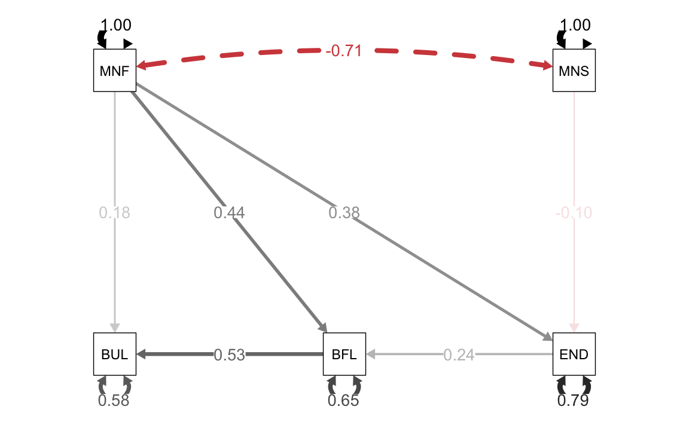
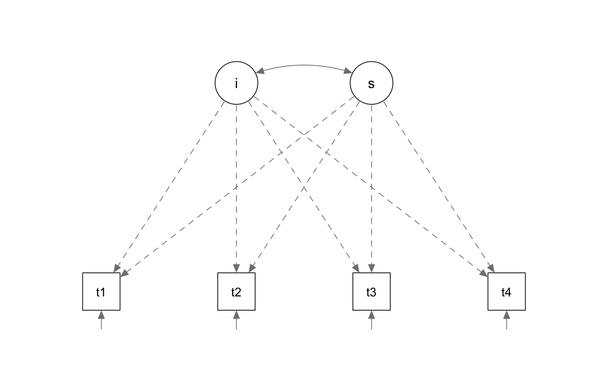

23.1 Dati longitudinali
Possiamo pensare ai modelli LGM come ad un’estensione del modello CFA dotato di meanstructure. Infatti, dobbiamo modellare la relazione tra le medie dei punteggi dei partecipanti in funzione del tempo.
L’inclusione della meanstructure significa che non possiamo usare in input la matrice di covarianza campionaria, ma dobbiamo invece utilizzare i dati grezzi (ovvero, le singole osservazioni per ciascun partecipante). Un altro requisito degli LGM è che i dati devono essere forniti del formato wide, il che significa che ogni colonna rappresenta la variabile di esito in un diverso momento nel tempo. Si presume che ogni osservazione o riga sia indipendente dalle altre; le colonne mostrano invece una dipendenza temporale.
I modelli LGM sono dunque un caso speciale di CFA e, nello specifico, corrispondono un modello CFA a due fattori in cui le saturazioni fattoriali sono fissate a valori predefiniti.
23.1.1 Un esempio concreto
L’esempio che discuteremo utilizza un campione di dati artificiali chiamato Demo.growth in cui si ipotizza che un determinato punteggio venga misurato su quattro punti temporali. I dati sono i seguenti:
data(Demo.growth)
glimpse(Demo.growth)
#> Rows: 400
#> Columns: 10
#> $ t1 <dbl> 1.7256454, -1.9841595, 0.3195183, 0.7769485, 0.4489440, -1.7469951,…
#> $ t2 <dbl> 2.1424005, -4.4006027, -1.2691171, 3.5313707, -0.7727747, -0.996340…
#> $ t3 <dbl> 2.77317167, -6.01655626, 1.56001603, 3.13821140, -1.50351504, -0.82…
#> $ t4 <dbl> 2.51595586, -7.02961801, 2.86852958, 5.36374139, 0.07846742, 0.5669…
#> $ x1 <dbl> -1.1641026, -1.7454025, 0.9202112, 2.3595236, -1.0887077, -0.513516…
#> $ x2 <dbl> 0.17422932, -1.57686022, -0.14181802, 0.70796813, -1.00999772, -0.1…
#> $ c1 <dbl> -0.02767765, -2.03196724, 0.05237496, 0.01911429, 0.65243274, -0.04…
#> $ c2 <dbl> 0.55492337, 0.12533477, -1.25774075, 0.64738300, 0.73091476, -0.416…
#> $ c3 <dbl> 0.254478433, -1.564232274, -1.803390895, -0.432379510, -0.753781573…
#> $ c4 <dbl> -1.00639541, 1.22926875, -0.32725761, -1.03239779, -0.02745598, 0.5…La variabile dipendente è rappresentata dalle quattro colonne chiamate t1, t2, t3 e t4 che corrispondono alla serie temporale con quattro misurazioni per ciascun soggetto.
Trasformiamo i dati in formato long:
demo_growth_long <- Demo.growth %>%
dplyr::select(t1, t2, t3, t4) %>%
pivot_longer(
cols = starts_with("t"),
names_to = "t",
values_to = "y"
) %>%
as.data.frame()
demo_growth_long$time <- rep(0:3, 400)
demo_growth_long$id <- rep(1:400, each = 4)Esaminiamo un campione casuale di 9 soggetti. È presente una notevole variazione da soggetto a soggetto:
id_sel <- sample(1:400, 9)
d <- demo_growth_long[demo_growth_long$id %in% id_sel, ]
d %>%
ggplot(aes(x = time, y = y)) +
geom_line() +
facet_wrap(~id)Notiamo che una funzione lineare è appropriata per rendere conto della variazione temporale della variabile risposta:
d %>%
ggplot(aes(x = time, y = y)) +
geom_point() +
stat_smooth(method = "lm", se = FALSE) +
facet_wrap(~id)
Complessivamente, i dati suggeriscono un andamento crescente della variabile risposta in funzione del tempo:
demo_growth_long %>%
ggplot(aes(time, y, group = id)) +
geom_line(alpha = 0.1) + # add individual line with transparency
stat_summary( # add average line
aes(group = 1),
fun = mean,
geom = "line",
size = 1.5,
color = "black"
) +
labs(x = "Time", y = "y")Per adattare a questi dati un modello lineare di crescita, specifichiamo il seguente modello a variabili latenti
\[ y_j = \alpha_0 + \alpha_1 \lambda_j + \zeta_{00} + \zeta_{11} \lambda_j + \epsilon_j, \] dove
- \(y_j\) è la variabile di interesse che cambia nel tempo, con \(j = 0, \dots, 3\).
- \(\alpha_0\) rappresenta l’intercetta della retta di regressione al tempo \(t = 0\) (il punto di partenza della linea nera sopra).
- \(\alpha_1 \lambda_j\) è il tasso medio di crescita nel tempo (la pendenza della linea nera nel grafico sopra). Qui \(\lambda_j\) è solo l’indice dei punti temporali considerati (0, 1, 2, 3).
- \(\zeta_{00}\) è la varianza tra i soggetti nel punto \(t = 0\).
- \(\zeta_{11} \lambda_j\) è la varianza del tasso di crescita tra i soggetti.
- \(\epsilon_j\) è la varianza di ciascun soggetto attorno alla sua retta di regressione.
Tali relazioni statistiche vengono rappresentate dal modello di equazioni strutturali della figura 23.1.

FIGURA 23.1: Modello di crescita latente.
Un modello lineare di crescita latente corrisponde dunque ad un modello fattoriale con due variabili latenti: un fattore (\(\eta_0\)) corrisponde al “punteggio vero” delle intercette individuali, mentre l’altro fattore (\(\eta_1\)) che corrisponde al “punteggio vero” delle pendenze delle rette di regressione per i singoli individui.
Nella sintassi lavaan il modello LGM diventa:
Si noti che, per il fattore \(\eta_0\) (che rappresenta le intercette), i valori delle saturazioni fattoriali sono fissate a 1 – questo è il motivo per cui \(\alpha_0\) e \(\zeta_{00}\) compaiono da soli nell’equazione precedente: in maniera esplicita sono \(1 \cdot \alpha_0\) e \(1 \cdot \zeta_{00}\).
Le saturazioni per il fattore \(\eta_1\) (che specifica le pendenze delle funzioni lineari) sono fissate ai valori che descrivono la variazione temporale: qui i valori \(\lambda_j\) da 0 a 3.
Il modello include anche la correlazione tra \(\eta_0\) e \(\eta_1\), rappresentata dalla doppia freccia \(\zeta_{01}\). Se \(\zeta_{01} > 0\), questo significa che, con il passare del tempo, i partecipanti tendono a diventare sempre più diversi tra loro; un’interpretazione opposta si ha se \(\zeta_{01}< 0\).
Adattiamo il modello ai dati:
fit <- growth(model, data = Demo.growth)
summary(fit)
#> lavaan 0.6.14 ended normally after 29 iterations
#>
#> Estimator ML
#> Optimization method NLMINB
#> Number of model parameters 9
#>
#> Number of observations 400
#>
#> Model Test User Model:
#>
#> Test statistic 8.069
#> Degrees of freedom 5
#> P-value (Chi-square) 0.152
#>
#> Parameter Estimates:
#>
#> Standard errors Standard
#> Information Expected
#> Information saturated (h1) model Structured
#>
#> Latent Variables:
#> Estimate Std.Err z-value P(>|z|)
#> i =~
#> t1 1.000
#> t2 1.000
#> t3 1.000
#> t4 1.000
#> s =~
#> t1 0.000
#> t2 1.000
#> t3 2.000
#> t4 3.000
#>
#> Covariances:
#> Estimate Std.Err z-value P(>|z|)
#> i ~~
#> s 0.618 0.071 8.686 0.000
#>
#> Intercepts:
#> Estimate Std.Err z-value P(>|z|)
#> .t1 0.000
#> .t2 0.000
#> .t3 0.000
#> .t4 0.000
#> i 0.615 0.077 8.007 0.000
#> s 1.006 0.042 24.076 0.000
#>
#> Variances:
#> Estimate Std.Err z-value P(>|z|)
#> .t1 0.595 0.086 6.944 0.000
#> .t2 0.676 0.061 11.061 0.000
#> .t3 0.635 0.072 8.761 0.000
#> .t4 0.508 0.124 4.090 0.000
#> i 1.932 0.173 11.194 0.000
#> s 0.587 0.052 11.336 0.000Esaminiamo il path diagram.
semPaths(
fit,
layout = "tree",
intercepts = FALSE,
posCol = c("black"),
edge.label.cex = 0.00001,
sizeMan = 7,
what = "path",
optimizeLatRes = TRUE,
residuals = TRUE,
style = "lisrel"
)
Ci sono 6 tipi di parametri di interesse:
| x | |
|---|---|
| t1~~t1 | 0.5952890 |
| t2~~t2 | 0.6760337 |
| t3~~t3 | 0.6348906 |
| t4~~t4 | 0.5076449 |
| i~~i | 1.9319804 |
| s~~s | 0.5869142 |
| i~~s | 0.6178630 |
| i~1 | 0.6146957 |
| s~1 | 1.0062943 |
- l’intercetta \(i\) = 0.615 è il valore atteso della variabile risposta al momento \(t_0\);
- la pendenza \(s\) = 1.006 è il tasso di cambiamento medio della variabile risposta nel tempo. Ad ogni successivo momento temporale, il valore medio della variabile risposta aumenta in media di 1.006 punti;
- varianza \(i\) = 1.932 misura la variazione tra i soggetti al momento \(t_0\) (ci dice quanto sono diverse le intercette delle rette di regressione tra i soggetti);
- varianza \(s\) = 0.587 misura la variazione del tasso di crescita tra i soggetti (ci dice quanto sono diverse le pendenze delle rette di regressione tra i soggetti);
- varianze
t1, …,t4: i valori da 0.595 a 0.508 descrivono la variazione tra i soggetti in ciascun momento del tempo; - la covarianza tra
ies= 0.618 ci dice che i valori della variabile risposta diventano via via più diversi nel tempo tra i rispondenti (un valore negativo avrebbe l’interpretazione opposta).
Le stime dell’intercetta e della pendenza della funzione di crescita per ciascun partecipante si ottengono nel modo seguente:
rand_eff <- as.data.frame(lavPredict(fit))
head(rand_eff)
#> i s
#> 1 1.2275557 0.60278312
#> 2 -2.6795847 -1.38498215
#> 3 -0.2955058 0.88828376
#> 4 1.1576419 1.34051395
#> 5 -0.4355522 0.03193498
#> 6 -1.3121802 0.50258530Istogrammi delle stime individuali dell’intercetta e della pendenza della curva di crescita si ottengono nel modo seguente:
gi <- rand_eff %>%
ggplot(aes(x = i)) +
geom_histogram()
gh <- rand_eff %>%
ggplot(aes(x = s)) +
geom_histogram()
gi + gh
23.1.2 Visualizzare il cambiamento
È utile visualizzare i punteggi previsti dal modello. A tal fine, useremo qui la funzione predict() per creare un nuovo oggetto \(\mathsf{R}\) che contiene i punteggi previsti a livello individuale per l’intercetta e la pendenza.
pred_lgm <- predict(fit)
head(pred_lgm)
#> i s
#> [1,] 1.2275557 0.60278312
#> [2,] -2.6795847 -1.38498215
#> [3,] -0.2955058 0.88828376
#> [4,] 1.1576419 1.34051395
#> [5,] -0.4355522 0.03193498
#> [6,] -1.3121802 0.50258530Questi sono i valori previsti dal modello per ciascun partecipante. Se calcoliamo la media di queste variabili otteniamo gli stessi risultati che sono stati riportati sopra:
# average of the intercepts (first column)
mean(pred_lgm[, 1])
#> [1] 0.6146957
# average of the slope (second column)
mean(pred_lgm[, 2])
#> [1] 1.006294Il cambiamento nel tempo previsto dal modello per il soggetto \(j\)-esimo è
\[ y_j = \eta_0 + \lambda_j \eta_1. \]
Il cambiamento previsto per tutti i soggetti può essere visualizzato nel modo seguente:
# create long data for each individual
pred_lgm_long <- map(
0:3, # loop over time
function(x) pred_lgm[, 1] + x * pred_lgm[, 2]
) %>%
reduce(cbind) %>% # bring together the wave predictions
as.data.frame() %>% # make data frame
setNames(str_c("time", 0:3)) %>% # give names to variables
mutate(id = row_number()) %>% # make unique id
gather(-id, key = time, value = pred) # make long format
# make graph
pred_lgm_long %>%
ggplot(aes(time, pred, group = id)) + # what variables to plot?
geom_line(alpha = 0.1) + # add a transparent line for each person
stat_summary( # add average line
aes(group = 1),
fun = mean,
geom = "line",
size = 1.5,
color = "black"
) +
labs(y = "y", x = "time")La linea nera più spessa rappresenta l’intercetta media e la pendenza media della curva di crescita del modello LGM. Ogni individuo ha una sua specifica intercetta e uno specifico tasso di cambiamento e questa diversità è catturata nelle componenti di varianza del modello.
23.1.3 Dati ordinali vs. intervalli temporali
La specificazione s =~ 0*t1 + 1*t2 + 2*t3 + 3*t4 assume che il tempo sia misurato per intervalli costanti. Questa sintassi può essere usata quando il tempo è misurato su una scala a livello ordinale, quando supponiamo diverse rilevazioni temporali e chi chiediamo cosa succeda passando da una alla successiva, senza specificare precisamente qual è la distanza temporale tra le varie rilevazioni. In alternativa è possibile specificare in termini assoluti il tempo trascorso tra le diverse rilevazioni temporali – questo è possibile solo se tali distanze temporali sono costanti tra i soggetti. Ad esempio, se passano 2, 3 e 9 mesi dalla prima rilevazione, avremo il seguente modello.
La scelta di utilizzare il tempo ordinale rispetto a quello assoluto non cambia il numero di parametri del modello o i gradi di libertà. Tuttavia la media dei punteggi fattoriali che rappresentano l’intercetta e la pendenza può cambiare e l’interpretazione di questi termini cambierà di conseguenza.
fit_a <- growth(model_a, data = Demo.growth)
kable(coef(fit_a), booktabs = TRUE, format = "markdown")| x | |
|---|---|
| t1~~t1 | 0.75840584 |
| t2~~t2 | 0.80990552 |
| t3~~t3 | 0.63209463 |
| t4~~t4 | 0.49864811 |
| i~~i | 2.04046924 |
| s~~s | 0.05802979 |
| i~~s | 0.23300623 |
| i~1 | 0.76120704 |
| s~1 | 0.31906615 |
Mentre in precedenza l’interpretazione era che la media della variabile risposta aumenta in media 1.006 punti passando da una rilevazione temporale alla successiva, nel caso della presente specificazione temporale in mesi possiamo dire che media della variabile risposta aumenta in media 0.319 punti dopo l’incremento temporale di un mese.
23.1.4 Verifica di ipotesi
È anche possibile utilizzare le funzionalità di lavaan per verificare specifiche ipotesi di interesse relative ai dati longitudinali. Ad esempio, una possibile domanda riguarda l’uguaglianza degli errori nel tempo. Tale domanda può essere affrontata introducendo dei vincoli nella specificazione del modello LGM e, successivamente, confrontando la bontà dell’adattamento del modello vincolato e del modello generale.
Il modello vincolato è
model_eqerr <- "
i =~ 1*t1 + 1*t2 + 1*t3 + 1*t4
s =~ 0*t1 + 1*t2 + 2*t3 + 3*t4
t1 ~~ a*t1
t2 ~~ a*t2
t3 ~~ a*t3
t4 ~~ a*t4
"Adattiamo il modello vincolato:
Confrontiamo il modello vincolato con il modello libero:
anova(fit, fit_eqerr)
#>
#> Chi-Squared Difference Test
#>
#> Df AIC BIC Chisq Chisq diff RMSEA Df diff Pr(>Chisq)
#> fit 5 5528.1 5564.0 8.0687
#> fit_eqerr 8 5523.7 5547.7 9.6779 1.6091 0 3 0.6573Il test del rapporto di verosimiglianza (likelihood ratio) eseguito dalla funzione anova() produce un \(p\)-valore di 0.6573. Ciò significa che, nei dati esaminati, non si rileva una decremento della bontà dell’adattamento degna di nota nel passare dal modello libero al modello vincolato. Dunque, l’ipotesi dell’equaglianza della varianza degli errori nel tempo sembra ragionevole.
23.1.5 Un secondo esempio
Un modello leggermente più complesso aggiunge due regressori (x1 e x2) che influenzano i fattori di crescita latenti. Inoltre, è stata aggiunta al modello una covariata c variabile nel tempo che influenza la misura del risultato nei quattro punti temporali.
model2 <- "
# intercept and slope with fixed coefficients
i =~ 1*t1 + 1*t2 + 1*t3 + 1*t4
s =~ 0*t1 + 1*t2 + 2*t3 + 3*t4
# regressions
i ~ x1 + x2
s ~ x1 + x2
# time-varying covariates
t1 ~ c1
t2 ~ c2
t3 ~ c3
t4 ~ c4
"fit2 <- growth(model2, data = Demo.growth)
summary(fit2)
#> lavaan 0.6.14 ended normally after 31 iterations
#>
#> Estimator ML
#> Optimization method NLMINB
#> Number of model parameters 17
#>
#> Number of observations 400
#>
#> Model Test User Model:
#>
#> Test statistic 26.059
#> Degrees of freedom 21
#> P-value (Chi-square) 0.204
#>
#> Parameter Estimates:
#>
#> Standard errors Standard
#> Information Expected
#> Information saturated (h1) model Structured
#>
#> Latent Variables:
#> Estimate Std.Err z-value P(>|z|)
#> i =~
#> t1 1.000
#> t2 1.000
#> t3 1.000
#> t4 1.000
#> s =~
#> t1 0.000
#> t2 1.000
#> t3 2.000
#> t4 3.000
#>
#> Regressions:
#> Estimate Std.Err z-value P(>|z|)
#> i ~
#> x1 0.608 0.060 10.134 0.000
#> x2 0.604 0.064 9.412 0.000
#> s ~
#> x1 0.262 0.029 9.198 0.000
#> x2 0.522 0.031 17.083 0.000
#> t1 ~
#> c1 0.143 0.050 2.883 0.004
#> t2 ~
#> c2 0.289 0.046 6.295 0.000
#> t3 ~
#> c3 0.328 0.044 7.361 0.000
#> t4 ~
#> c4 0.330 0.058 5.655 0.000
#>
#> Covariances:
#> Estimate Std.Err z-value P(>|z|)
#> .i ~~
#> .s 0.075 0.040 1.855 0.064
#>
#> Intercepts:
#> Estimate Std.Err z-value P(>|z|)
#> .t1 0.000
#> .t2 0.000
#> .t3 0.000
#> .t4 0.000
#> .i 0.580 0.062 9.368 0.000
#> .s 0.958 0.029 32.552 0.000
#>
#> Variances:
#> Estimate Std.Err z-value P(>|z|)
#> .t1 0.580 0.080 7.230 0.000
#> .t2 0.596 0.054 10.969 0.000
#> .t3 0.481 0.055 8.745 0.000
#> .t4 0.535 0.098 5.466 0.000
#> .i 1.079 0.112 9.609 0.000
#> .s 0.224 0.027 8.429 0.000| x | |
|---|---|
| i~x1 | 0.60838657 |
| i~x2 | 0.60410683 |
| s~x1 | 0.26223932 |
| s~x2 | 0.52173009 |
| t1~c1 | 0.14335610 |
| t2~c2 | 0.28900400 |
| t3~c3 | 0.32753750 |
| t4~c4 | 0.33049483 |
| t1~~t1 | 0.57982241 |
| t2~~t2 | 0.59559342 |
| t3~~t3 | 0.48141221 |
| t4~~t4 | 0.53520654 |
| i~~i | 1.07945768 |
| s~~s | 0.22376291 |
| i~~s | 0.07475324 |
| i~1 | 0.58023837 |
| s~1 | 0.95757971 |
I risultati mostrano che le due covariate \(x\) influenzano sia l’intercetta sia la pendenza della curva di crescita. Inoltre, vi sono evidenze di un effetto della covariata c.